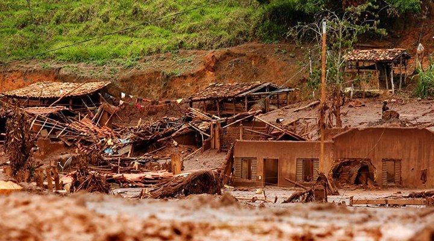

Degradação florestal na Amazônia em setembro é a maior em 15 anos, aponta Imazon
Publicado em 15 de Setembro de 2024 por Equipe TerraWise
A degradação florestal na Amazônia chegou aos 20.238 km² em setembro, representando a maior área atingida pelo dano ambiental dos últimos 15 anos.
Os dados são do Imazon, instituto de pesquisa que monitora o desmatamento e a degradação florestal na região por imagens de satélite desde 2008 e 2009, respectivamente.
A área degradada equivale a mais de 13 vezes a cidade de São Paulo. Segundo a pesquisadora Larissa Amorim, setembro costuma ser um mês marcado com mais registros de danos ambientais. Entretanto, os números deste ano são muito mais elevados do que os vistos anteriormente.
Setembro foi também o quarto mês consecutivo com aumento nas áreas degradadas, o que contribuiu para o acumulado ser o maior dos últimos 15 anos: 26.246 km². O número é quase quatro vezes maior de 2022, que detinha o recorde, de 6.869 km².
O Pará liderou a porcentagem das áreas degradadas. Sete dos 10 municípios estão no estado, incluindo os três primeiros: São Félix do Xingu (3.966 km²), Ourilândia do Norte (1.547 km²) e Novo Progresso (1.301 km²). O estado também registrou [11.558 km² de áreas degradadas em setembro. Mato Grosso (25%), Rondônia (10%) e Amazonas (7%) completam o top 4.
“Historicamente no período de setembro, Mato Grosso costumava liderar como o estado que mais degradava a Amazônia. Porém, em 2024, o Pará surpreendeu com números muito altos. Ainda em setembro, foi decretada situação de emergência e proibido o uso de fogo, mas precisamos que essa decisão seja acompanhada de fiscalização e responsabilização dos culpados para que seja mais eficaz”, aponta o coordenador do programa de Monitoramento da Amazônia do Imazon, Carlos Souza Jr.